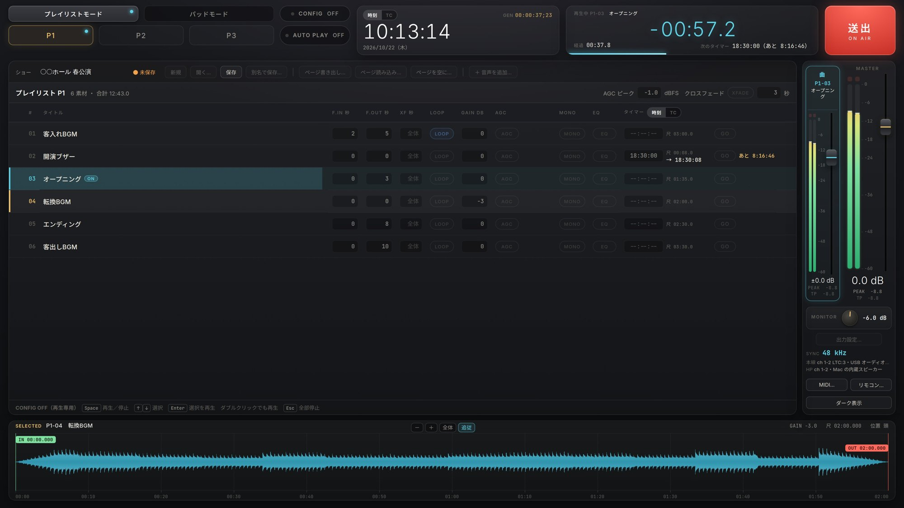
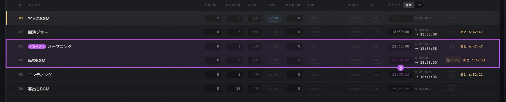
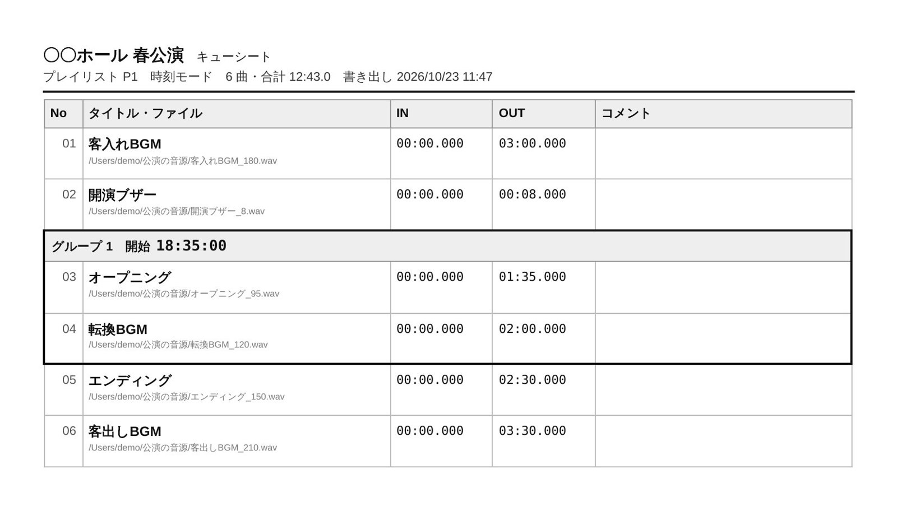
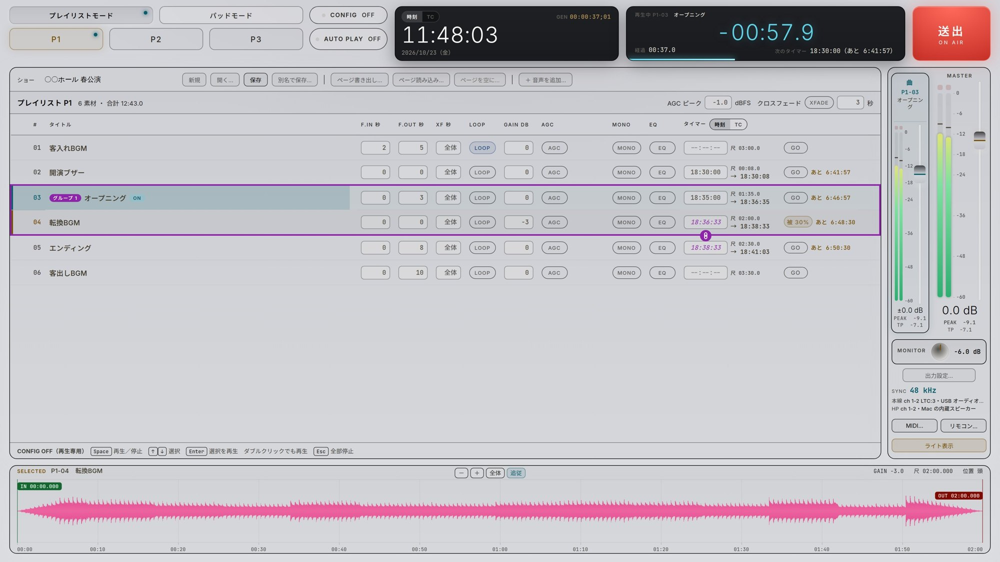

PonDashi Player Audio PRO
現場のテスターと作り込んだ、プロ仕様の「ポン出し」ソフトウェア。Core Audio にネイティブ対応し、内部の音声処理まで突き詰めて高音質を実現。OUT バスのルーティング、iPhone・iPad のリモコンアプリからの操作にも対応しました。LTC の入力・出力は、オプション（別売）で追加できます。
現場で出た「これが欲しい」を、ひとつずつ形にしています。

PRO で加わる機能
PonDashi Player Audio の機能（プレイリスト、パッド、タイマー、EQ、AGC・A.FDR、MIDI、曲フェーダー、リモコンなど）は、すべてそのまま使えます。
- 出すOUT バス

本線と HP モニターそれぞれ、ch のマスをクリックして L・R を割り当てます。 OUT バスを自由にアサイン
Core Audio にじかにつながるネイティブのエンジンで、本線と HP モニターそれぞれ、オーディオインターフェイスの ch に L・R を自由に割り当てられます。同じ音を複数の ch へ出すことも、LTC を別の ch から出すこともできます。割り当ては機器ごとに覚えます。
- 出す機器の占有・バッファ

出力設定（Core Audio）。機器、占有、バッファ、ルーティングをここで決めます。 機器の占有・バッファ
機器の占有を ON にすると、オーディオインターフェイスをこのアプリだけで使い、ほかのアプリの音が混ざりません。バッファは 64〜1024 サンプルから、遅れの少なさと音切れへの強さで選べます。
- 鳴らすエンジン
サンプル単位のエンジン
音の処理を、すべてネイティブで作り直しました。鳴らし始めをサンプル単位にそろえるので、タイマーやクロスフェードで鳴らしたときも、素材のサンプルがそのまま出ます。
- 合わせるサンプルレート
サンプルレート SYNC
処理のサンプルレートは、本線の機器に合わせます（44.1／48／96 kHz など）。レートの違う素材は、Core Audio の変換器の最高品質で変換し、曲名の横に SRC の印が付きます。
- 見るメーター

PEAK と TP を並べて表示。 トゥルーピーク
PEAK に加えて、サンプルとサンプルの間のピーク（TP）まで表示。0 dBTP を超えるとオレンジ、本当に割れると赤の印が残ります。
- ととのえるEQ
EQ を切ると完全に素通し
EQ の IN を外すと EQ を通らず、ビットが変わらないまま出ます。
- 受ける・送るLTC（オプション 1,000 円・税込）

タイムコードのパネル。レート、ロック、GEN・RCV の状態を一目で確認できます。 LTC GEN・LTC RCV
LTC GEN は鳴っている曲の TC を出し、プリロールで相手の機器が追いつく時間を作れます。LTC RCV は受けた TC で曲を鳴らし、鳴り始めた曲は LTC が途切れても最後まで自走します。TC モードでは、曲ごとにタイムコードを決めて鳴らします（チェイス）。レートは 29.97 DF／29.97 ND／30 NDF。
- まとめるグループ・キューシート

グループは紫の枠で表示。前の曲の終わりから自動で入った時刻は、紫の斜めの文字で出ます。 
書き出したキューシート。見本の PDF（A4 縦） グループとリンク
先頭の曲に時刻（TC）を入れると、残りの曲は前の曲の終わりから自動で入ります。IN／OUT、フェード、クロスフェード、入り方（GO・落ち切り・被せ）を変えると、自動で計算し直します。時刻モードでも TC モードでも使えます。
キューシートの書き出し（PDF）
プレイリストを A4 縦の表にして書き出します。列は No・タイトル（ファイル）・IN・OUT・コメント（手書き用の空欄）。グループは枠で囲み、開始時刻を入れます。
- 見る表示

ライト表示。明るい場所でも見やすい画面です。 ライト表示
ダークとライトを切り替えられます。
ノーマル版との違い
| 違い | PonDashi Player Audio | PRO |
|---|---|---|
| 音のエンジン | Web Audio | Core Audio にじかにつながるネイティブのエンジン（音質の向上） |
| OUT バス | ch 1-2 だけ | オーディオインターフェイスの仕様に沿って自由にアサイン |
| 機器の占有 | なし | ほかのアプリの音を混ぜずに、オーディオインターフェイスを占有できる |
| メーター | ピーク | ピーク＋トゥルーピーク（サンプルの間のピークも見える） |
| EQ を切ったとき | EQ を通る | 完全に素通し（ビットが変わらない） |
| サンプルレート | 48 kHz 固定 | 出力の機器に合わせる |
| グループとリンク | ― | あり |
| キューシートの書き出し（PDF） | ― | あり |
| 表示 | ダーク | ダーク・ライト |
| タイムコード | なし | LTC の入出力（オプション 1,000 円・税込） |
値段・購入
| PRO 本体 | 1 台 2,000 円（税込） |
|---|---|
| LTC オプション | 1 台 1,000 円（税込）。PRO 本体に追加 |
| ノーマル版からのアップグレード | 1 台 1,000 円（税込） |
購入の前に、体験版（14 日間・LTC を含むすべての機能）で、お使いの Mac で動くかを確かめてください。動かないときは、サポート（info.apexcue@gmail.com）までご連絡ください。
公式サイトで購入 1 台 2,000 円（税込）。購入画面で台数（1〜5 台）を選べます。支払いのあと、ライセンスキー（PDP-…）がすぐに表示されます。
アプリをダウンロード（1.1.0・DMG・約 137 MB） 初めて起動すると、体験版を始められます。14 日間、LTC を含むすべての機能を使えます。続けて使うときは、ライセンスキーを入力します。
LTC オプションを購入（PRO のキーをお持ちの方） ノーマル版からアップグレード（直販版のキー PDA-… をお持ちの方。App Store 版は対象外です）
どちらも、アプリの「ライセンス…」からも購入できます。
動かすのに必要なもの
| Mac | Apple Silicon（M1 以降）。Intel の Mac では動きません |
|---|---|
| OS | macOS 13 Ventura 以降 |
| メモリ | 8 GB 以上（16 GB 以上をおすすめします） |
| 画面 | 横 1920 ピクセル以上をおすすめします |
| LTC を使うとき | LTC を出す・受ける ch のあるオーディオインターフェイス |
| バージョン | 1.1.0 |
素材は、読み込むときに全部メモリに入れます。ステレオ 48 kHz で 1 分あたり約 23 MB、EQ を掛けた素材はその約 2 倍です。長い素材を多く入れるショーでは、メモリに余裕のある Mac をお使いください。
本番の出力は、ケーブルでつないだ機器をおすすめします。ワイヤレスのイヤホンやスピーカーは、遅れや途切れが出やすくなります。